A platform for building AI, ML, & Computer Vision pipelines using real-time sensing data
INFINIWORKFLOW runs in a browser with the following main UI components

The application menu allows the following functionality
The tool catalog allows you to add new tools as nodes into your flowgraph
The first tab will show all the tools and the remaining tabs show a subset of tools such as related to computer vision or ML etc. You can hover over the tab icon and a tooltip will show you the category name. Once a category tab is selected you can further refine the list of tools shown by entering keywords input, this is useful to quickly find a particular tool you want to insert into your workflow.
Hovering over the tools shows a tooltip description of the tool. To insert a tool into the workflow can be done with the following gestures:
Drag and Drop
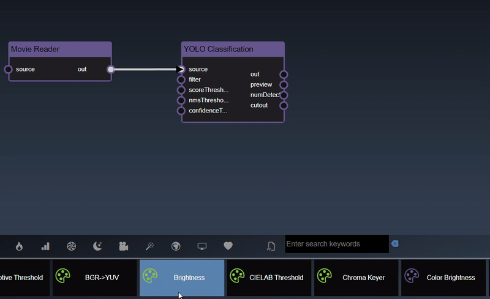Insert a node with edge

The flowgraph is used to construct your worflow that comprises of Nodes and Edges. Nodes represents functions that have input and generate outputs. These nodes are created by dragging tools into your workflow from the Tools Catalog. A node's input and output have 'ports' which are where edges can be connected. Edges are connections between the output port of an upstream node to the input port of a upstream node. Any inputs ports that are unconnected can also be set to specific values using the Parameter Editor. The color of the node indicates the implementation language for the as follows:
| C++ Nodes (can be executed on GPU or CPU) | |
| Python Nodes (can be executed on GPU or CPU) | |
| Cuda Kernels (always executed on the GPU) |
The flowgraph has the following components:
Adding an Edge to connect the output of an upstream node to the input of a downstream node. In this example, we want to have the Yolo Classification be done on a Movie Reader, we thus connect the output of the Movie Reader node to the input of the Yolo Classification node. Click on the source port of the upstream node and the drag to the destination port of the downstream node. A green line color indicates that the edge is allowed which is based on the type matching between the two ports

If the types do not match then a red line color indicates that the edge is invalid

There are a few exceptions to allow different types to be connected can be connected to each other. For example, the image2D type, which represents a 2D image in system memory, can be connected to a type cuda2D, a 2D image in GPU memory and vice-versa. The exceptions are as follows:
| Output Type | Input Type |
|---|---|
| * | Any type |
| Any type | * |
| image2D, matrix2D, buffer2D, cuda2D or texture2D | *2D |
| image2D, matrix2D or cuda2D | image2D, matrix2D or cuda2D |
| numeric | double, int, bool or numeric |
| double, int, bool or numeric | numeric |
| numeric2 | double2, int2 |
| double2, int2 | numeric2 |
Removing an Edge disonnects the output of upstream node to the input of a downstream node. In this example we no longer want the Yolo Classification be done on the output of the Movie Reader. Hover over the edge, it will indicate it can be deleted when a change in cursor happens, then click on the edge to delete it
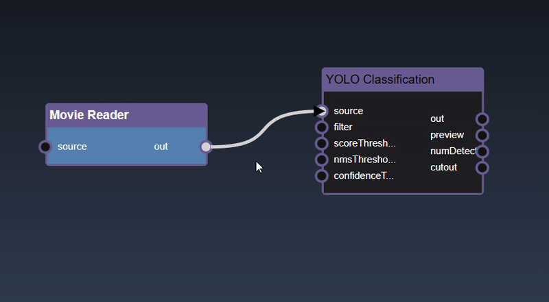Select a node can be done with a single click on the node. The node is shown highlighted in blue when it is selected

Clicking and dragging on a node will select it and also allow you to move the node around in the flowgraph

Holding the shift key whilst clicking allows you to add more nodes to the selection
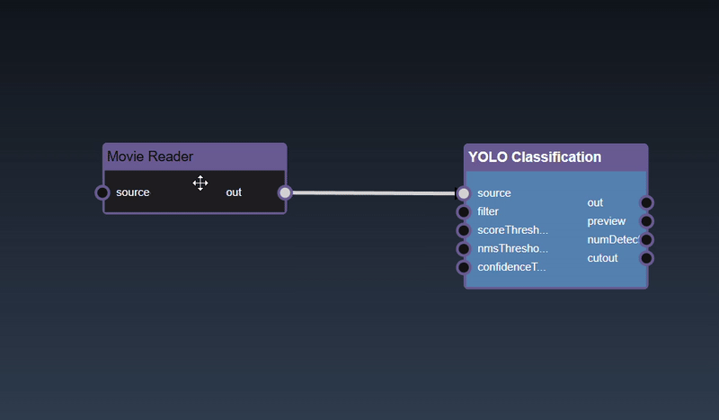To deselect all the nodes you can click on the flowgraph

Multiple nodes can also be selected by doing a rectangular selection, hold the alt key and drag the mouse which shows a box selection which will select all the nodes in the rectangle intersection after the mouse is released

To delete a node can be done by clicking the delete key
You can also 'rip' a node to remove it from the edges by shaking the node quickly
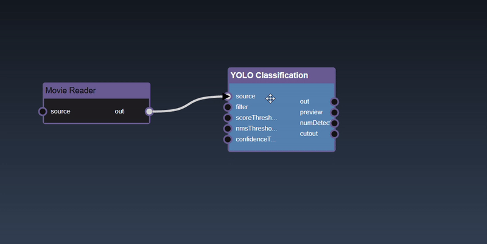To zoom into the center of the flowgraph you can press the + hotkey
To zoom out of the flowgraph you can press the - hotkey
To pan the flowgraph you can click and then drag the mouse. This allows you to navigate the workflow in the flowgraph when it becomes more complex

You can also zoom in and out using mouse scroll wheel or zoom gesture

When nodes are not in the visible viewport then indicators are shown on the boundary of the viewport. This indicators are useful to highlight scrolling or zooming will yield hidden nodes.
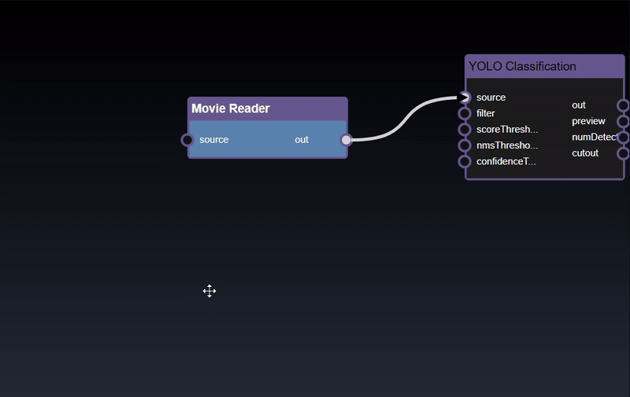Clicking the left mouse button over the node brings up the node context menu and also selects the node

Inspect and adjust functions
Node attribute functions
Performance related functions
Input/output port related functions
ML functions
Clipboard functions
Experimental functions
When you bring up the context menu without a node selected, the flowgraphs viewport functions are shown:
The parameter editor allows you to edit the parameters of the currently edited node
The UI consits of a tool description link, followed by the input parameters of the edited node and the dialog buttons. The description link, which shows the tool this node represents, when clicked will open a webpage that has the description of the tool. The inputs parameters are the ones that are able to be edited with manual values and any inputs that are connected via the flowgraph are not visible. You can also hide parameter inputs using the IO functions.
Hovering over the parameter will show the description of the parameter 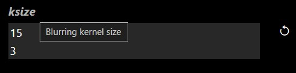
The dialog buttons allow you to close the dialog either you can accept the changes made by clicking OK or reject any changes made to the parameters by clicking Cancel. A button also allows you to reset all the parameters to the original default tool settings. The UI for each parameter input will be based on the type of the input, but all of them will have a reset icon that allows you to reset that particular parameter input back to its default value. The different types of parameter UI controls are as follows
| UI Look | Example | Description |
|---|---|---|
| Numeric textfield |  |
A numeric input allows you to enter the value. There are also step controls that allow you to increment one unit up and down. |
| Numeric2 textfield |  |
Two numeric inputs allow you to enter both numerical inputs |
| Numeric slider |  |
If the slider has minimum and maximum values a slider look appears |
| Numeric2 slider | 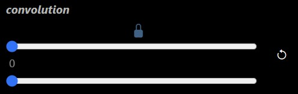 | Two numeric inputs with sliders that can optionally be locked together to modify both values to the same value |
| Checkbox |  |
A checkbox toggle to allow you to set inputs of type bool |
| Selection menu |  |
A selection menu allows you to set the value to one of the predefined values from a pulldown menu |
| Multi selection menu |  |
Multi selection allows you to add tags of permitted values. In some cases you can add tags to any custom value |
| Textfield | 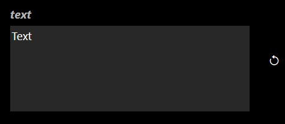 | A multi line textfield to allow you to set inputs of type string |
| Point | 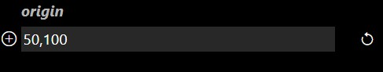 | A point allows you to set the values with a textfield and also has an icon when pressed opens the viewer and you can select a point by clicking in the viewer directly |
| Color |  |
A color button when clicked allows you to set the color using a color dialog 
|
| Curve |  |
An icon when pressed opens the bezier curve editor
|
| Map |  |
Clicking on the empty area in the dialog opens the Key/Value editor together with documentation about the hyperparameters 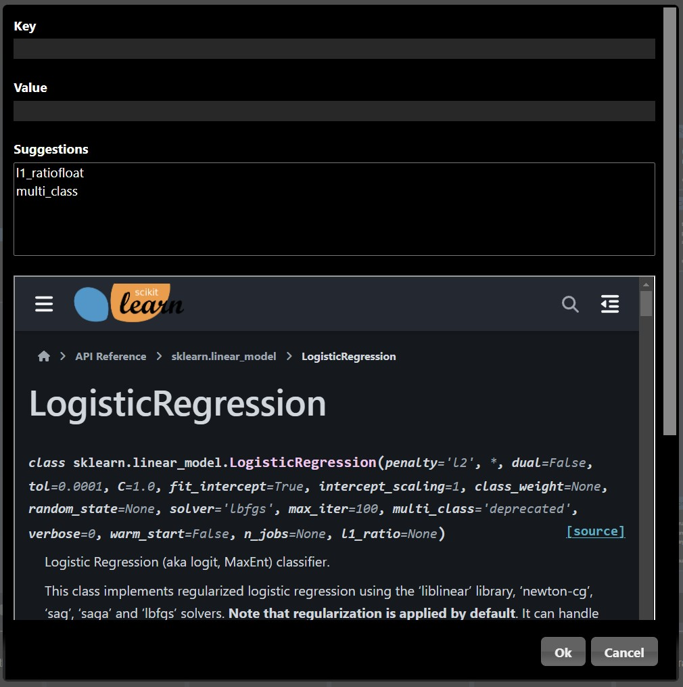 |
| Filebrowser |  |
Opens the IO dialog that allows you to to set the filename using a textfield. The prefix ${assets} is used to specifiy the file location is in the assets folder. An icon when pressed opens the IO Dialog that allows you to set the file location |
| Tabs |  |
Some of the tools also have a tab UI to simplify the controls into logical groups |
The viewer allows you to view the outputs of the currently viewed node
A node can be viewed using the node context menu and selecting 'View' or 'View & Edit'. When viewing a node with multiple outputs a menu will ask which output to view:
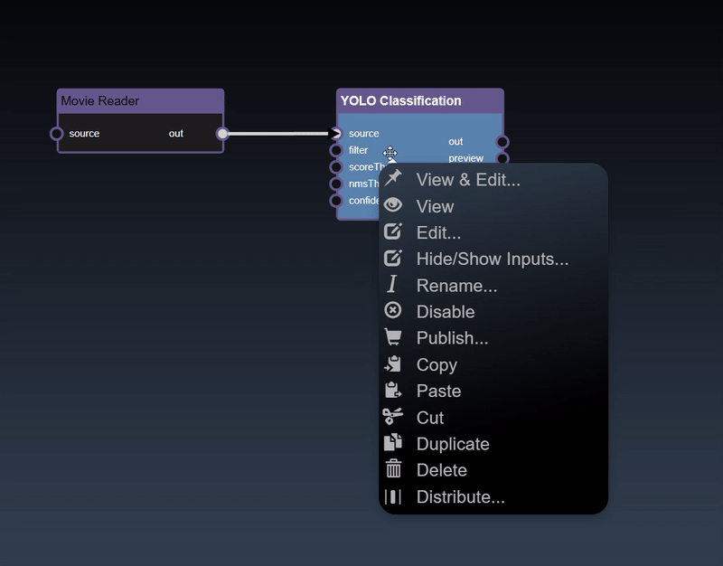The viewer also has controls to zoom in and pan. Using the mouse scroll wheel or zoom gesture you can also then pan by dragging the image. When zoomed in, a thumbnail is shown of the full image together with a slider to set the zoom amount.

Point input parameters in the Parameter Editor can be set in the overlay. Select the overlay icon and then click in the viewer to set the location of the point:

Only one node can be viewed at one time in the viewer. However, the flowgraph can also show a thumbnail viewer that shows the results of the output of the node using the 'Image Viewer' tool. This allows you to show multiple viewers at the same time on the workflow.

The viewer as well as displaying images has specific UI to display
Dataframes represent 2D tables and are implemented using the Pandas Python module. The viewer can display dataframes in a table. The controls allow you to slice a set of the rows and columns, in the example below we slice rows [30-40). The icon allows different representations of the table including show the sliced rows and columns, and red cells represent missing data; a summary description of the statistics of each column and the description of the types of each column:

Tensors represent multi-dimensional numeric arrays and are used in the PyTorch Python module. The viewer can display tensors in a variety of different visualizations where it will select the most useful visualization first and by clicking the allows you to visualize other representations of the tensor. Slicing controls are also available to reduce the tensor to a subset of its data.
A 1D dimensional tensors can be viewed as a histogram; a dot plot; a line chart and a histogram chart:

A 2D dimensional tensors can be viewed as a heatmap; a 3D height map plot; a line chart and a table:
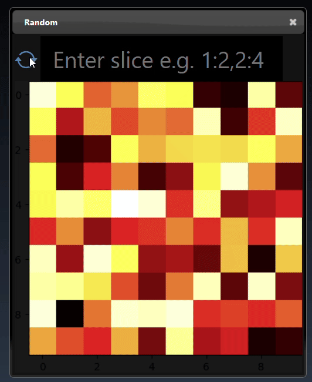A 3D dimensional tensors can be viewed as a 3D plot and abbrevaited tensor list:

Images can also be converted to tensors(using the 'Image to Tensor' tool) and they will be viewed as a 3D image; a 3D height map plot; a 3D color space plot, and abbrevaited tensor list:
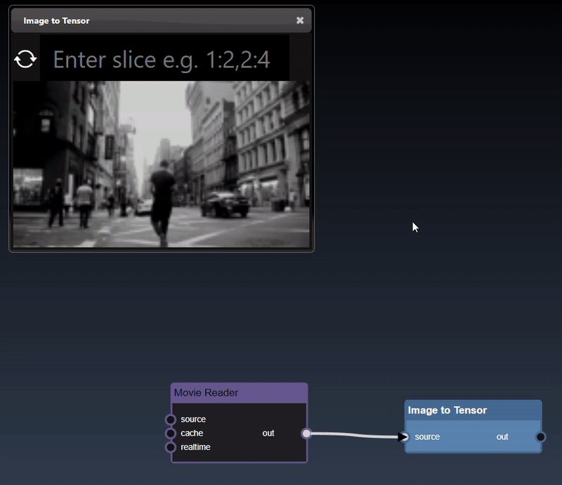Input and Export files are shown in a custom file selector dialog. Files icons and Folder icons are selectable. You have restricted access to the files that are located in either the ${assets} or ${demos} folders where INFINIWORKFLOW is installed. To import your own images, copy the files to the ${assets} folder and then they will be available to select in the file selector dialog.
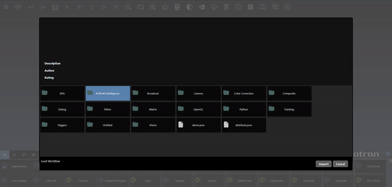You can set the hyperparameters using the node context menu and selecting 'Hyperparameters'. This brings up a dialog that allows you to select each input parameter and also set the range of values you want to have as part of the grid search. The dialog also includes the documentation for the model including the values expected for each paremeter argument.
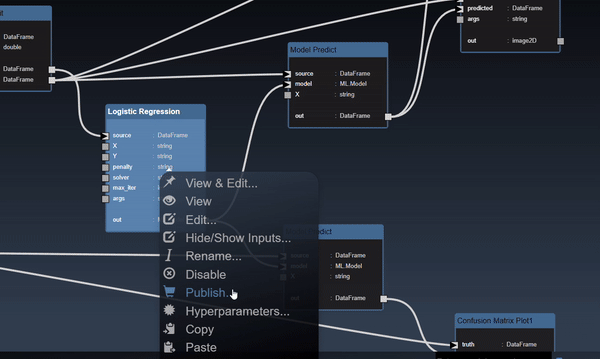Once you have refined your 'Hyperparameters' then you can start a Grid Search on a metric node you wish to maximize or minimize using the node context menu and selecting 'Grid Search'. The results of the Grid Search are done in an different process but you can see the results by clicking the icon in the application menu. The dialog will show the latest progress for each combination in the grid search and color indicators to show which is the highest or lowest value so far found. You can select a link in one of the rows to optimize your model which sets the hyperparameters values to the row.

When building models using the PyTorch nodes, the neural networks can get large with multiple nodes to generate the entire neural networl. You can create a macro to create a tool that replaces all the nodes which can be further used in the future and promotes sharing of models. When you create a macro you open the node context menu and select 'Create Macro'. The dialog allows you to name and set optional notes that will be associated with this new tool.
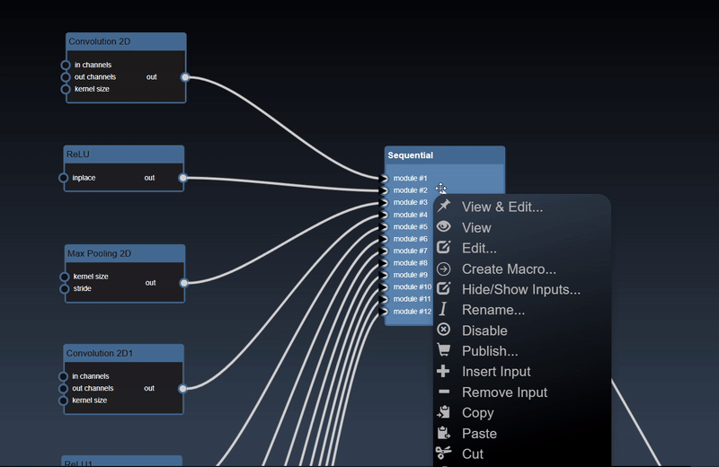INFINIWORKFLOW runs on a modern PC with Windows 11 or higher with an Intel or AMD processor and a NVIDIA GPU. It is highly recommended to have a multicore processor as the execution will be more smoother. The software will run on machines without a NVIDIA GPU but that will significantly reduce the performance especially for ML workflows. You must also have the latest Google Chrome browser installed : 131.0.6778.140 or higher.
The following are the full set of downloads packages:
Download the INFINWORKFLOW package from Photron's website. There are multiple packages, the first package to download is infiniworkflow_v1_0.zip. Unzip this file and then double click on the infiniworkflow.bat file in the unzipped folder:

A webpage displayed in the Google Chrome browser should appear - if another browser shows up then change your default browser to Chrome and redo this step.
The first thing that will be displayed in the browser is the INFINIWORKFLOW EULA which you must agree to. You will also see a Windows dialog that requests "Do you want to allow public and private networks to access the app?" for Python - you must allow access.
When you install INFINIWORKFLOW and run it the first time, you should see a Windows dialog that requests "Do you want to allow public and private networks to access the app?" for Python - you must allow access. If this dialog does not pop up and INFINWORKFLOW does not show images in the viewer then you have to manually grant access to allow INFINIWORKFLOW's Python installation to have access to public and private networks as follows:
There are two flavours of patches - one is a patch to the application and the others are feature patches to allow installation of different demos and packages. The application patch, for example it will be names something as follows: infiniworkflow_patch_v1_0.zip, will be available on the Photron website and is meant to patch your exisiting installation with a smaller set of files and thus has a substantially smaller download size. It is expected that the application patch will be frequently updated when bugs are fixes and small features added. To patch you should open a Windows Powershell prompt and then change the directory to your INFINIWORKFLOW folder (i.e. where you unzipped your original installation). Then type the following where you should replace /folder/to/ to the actual folder you downloaded the application patch:
patch.bat /folder/to/infiniworkflow_patch_v1_0.zip
The feature patches are meant to allow new functionaility including demos and assets such as the ML model.
For example you can download the YOLO classifier feature patch, yolo_v1_0.zip, from the Photron website and then install by open a Windows Powershell prompt
and then change the directory to your INFINIWORKFLOW folder and type the following where you
should replace /folder/to/ to the actual folder you downloaded the feature patch:
patch.bat /folder/to/yolo_v1_0.zip
This feature allows you to do processing on a different process on the same machine or a different machine on the network. You can start the distributted rendering by selecting a contigious set of nodes and then using the node context menu and selecting 'Distributed'. This brings up a dialog that allows you to set the URL for the server that will be performing the processing. Once you click Ok then the selected nodes are replaced by two nodes, the Distrubuted Sink and Distributed Source. The Sink node will send data from your system to the distrbuted server and the Source node will receive data from the distributed server.
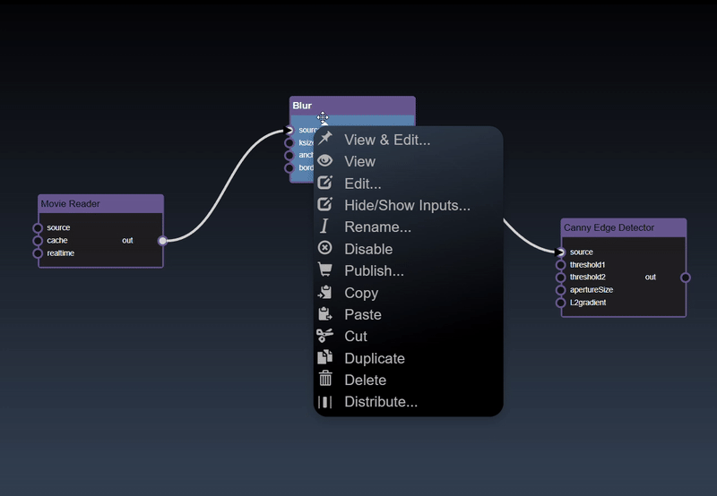This feature allows you to do simplify your worflow to just a subset of input parameters you want to expose as well as a limted subset of outputs that can be viewed. he future goal of this feature is to allow you to publish a simple app that has the critical controls that are needed in the deployment of your workflow in production and whilst hiding the complexity of the workflow. The first step is to select the nodes you want to publish parameters by selecting a contigious set of nodes and then using the node context menu and selecting 'Publish'
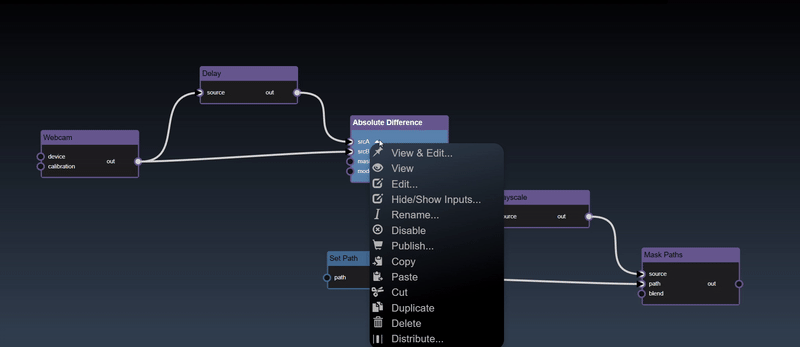Once you have selected the subset of input and outputs then you can click on the publish icon in the application menu and the flowgraph is hidden and a simpler UI only showing the published controls in the Parameter Editor and a fullscreen viewer is shown. You can switch back to the standard flowgraph view by pressing the publish icon again.
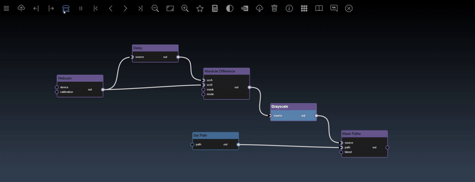Plugins can be implemented in C++ or Python and both will require a JSON file. The JSON Schema specifies the input and output parameters as well as the name and description of the plugin amonst other things.
All plugins must have an accompanying JSON file. The JSON file specifies the input and output parameters as well as the name and description of the plugin amonst other things. The specification of the schema is as follows:
| Attribute name | Mandatory | Default Value | Description | Example |
|---|---|---|---|---|
| title | The UI name of the plugin |
"title" : "Canny Edge Detector"Or you can specify a localized set "title": {
"en_US": "Canny Edge Detector",
"ja-JP": "キャニーエッジ検出器",
"es-ES": "Detector de bordes Canny",
"de_DE": "Canny Kantendetektor",
"zh_CN": "Canny 边缘检测器"
}
|
||
| identifier | The name of the plugin file |
Python:
"identifier": "day_of_week.py"C++: "identifier": "Canny2.plugin" |
||
| description | The description that explains the purpose of this plugin which will be shown in the UI |
"description" : "Canny Edge Detection is a popular edge detection algorithm"Or you can specify a localized set "description": {
"en_US": "Canny Edge Detection is a popular edge detection algorithm",
"ja-JP": "Canny Edge Detectionは人気のエッジ検出アルゴリズムです",
"es-ES": "Canny Edge Detection es un popular algoritmo de detección de bordes",
"de_DE": "Canny Edge Detection ist ein beliebter Kantenerkennungsalgorithmus",
"zh_CN": "Canny 边缘检测是一种流行的边缘检测算法"
}
|
||
| url | www.photron.com | A URL that is shown in the UI to have more information about the plugin |
"url": "https://docs.opencv.org/3.4/dd/d1a/group__imgproc__feature.html#ga04723e007ed888ddf11d9ba04e2232de" |
|
| tags | A list of tags that is associated with the plugin |
"tags": ["opencv", "edges", "canny"]Or you can specify a localized set: "tags": {
"en_US": ["opencv", "edges", "canny"],
"ja-JP": ["オープンCV", "エッジ", "賢い"],
"es-ES": ["abrircv", "bordes", "astuto"],
"de_DE": ["OpenCV", "Kanten", "schlau"],
"zh_CN": ["opencv", "边缘", "精明的" ]
}
|
||
| icon | "icon": "bi-heart-fill" |
A bootstrap icon that represents the plugin in the UI |
"icon": "bi-star" |
|
| category | The category the plugin will be placed in the Tool Catalog |
If you want to specify your own new category
"category": {
"id": "python_scripts",
"description": "User defined python scripts",
"icon": "bi-filetype-py"
}
If you want to place it in an exisiting category
"category": {
"id": "Photron"
}
|
||
| language | Must be either python, c++ or cuda |
"language": "c++" |
||
| supervise | "supervise": false |
Specifies if the plugin wants to handle supervion callbacks to enable/disable or hide/show parameters dynamically Note you must also set one of the input parameters to have a supervise attribute to be true which are the parameters that cause other parameters to change visibility |
"supervise": true |
|
| inputs | "inputs": [] |
An array of input objects that specifies each input of the plugin - see inputs schema |
"inputs": [
{
"name": "source",
"type": "image2D",
"mandatory": true,
"description":"Input image",
"identifier": "source"
},
{
"name": "threshold1",
"type": "double",
"default": "100.0",
"mandatory": true,
"description": "First threshold for the hysteresis procedure",
"identifier": "threshold1"
},
...
]
|
|
| outputs | "outputs": [] |
An array of output objects that specifies each output of the plugin - see outputs schema |
"outputs": [
{
"name": "out",
"type": "image2D",
"description": "Output edge map; single channels 8-bit image, which has the same size as image",
"identifier": "out"
}
]
|
| Attribute name | Mandatory | Default Value | Description | Example |
|---|---|---|---|---|
| name | The UI name of the input parameter |
"name" : "out"Or you can specify a localized set "name": {
"en_US": "out",
"ja-JP": "外",
"es-ES": "afuera",
"de_DE": "aus",
"zh_CN": "出去"
|
||
| identifier | The unique identifier for this input parameter |
"identifier": "out" |
||
| description | The description that explains the purpose of this output |
"description" : "Second threshold for the hysteresis procedure"Or you can specify a localized set "description": {
"en_US": "Second threshold for the hysteresis procedure",
"ja-JP": "ヒステリシス手順の2番目の閾値",
"es-ES": "Segundo umbral para el procedimiento de histéresis",
"de_DE": "Zweiter Grenzwert für das Hystereseverfahren",
"zh_CN": "滞后过程的第二个阈值"
}
|
||
| type | The type of the parameter which which include the standard types: int, double, int2, double2, bool, string, numeric, image2D, cuda2D. Or you can define your own type name. |
"type": "double" |
||
| mandatory | "mandatory": false |
Specifies if the input parameter is mandatory and must be set by the user. |
"mandatory": true |
|
| default | The default value of the input parameter which is must be enclosed in a string. No default values should be needed for types that are not set directly by the user e.g. image2D and cuda2D |
"default": "200.0" |
||
| min | Only for numeric types such as int or double. The minimum value the input value can be set to |
"min": "5.0" |
||
| max | Only for numeric types such as int or double. The maximum value the input value can be set to |
"max": "10.0" |
||
| step | Only for numeric types such as int or double. The step value the increments of the parameter UI will jump up and down |
"step": "1.0" |
||
| permitted | Only for int or string types. An array of strings that will be in the selection UI menu or the tag selection UI | |||
| private | "private": false |
Will not show the parameter in the UI |
"private": true |
|
| editable | "editable": true |
If the parameter can be editable or not, if not editable it will be disabled in the UI |
"editable": false |
|
| multiple | "multiple": false |
Only for string types that will allow multiple values to entered in the tag UI |
"multiple": true |
|
| userOptionAllowed | "userOptionAllowed": false |
Only for string types that allow user defined strings to be entered in the tag UI |
"userOptionAllowed": true |
|
| look |
A hint to indicate how the UI should be represented instead of the default look
int types: button, slider int2, double2, numeric2: point string: map, filebrowser, curve, path |
"look": "button" |
||
| ganged | Only for int2, double2, numeric2 types that allows both the dimensions to be ganged and set to the same value |
"ganged": "button" |
||
| multiline | "multiline": false |
Only for string types that indicate if the UI should have a textarea or a single textfield widget |
"multiline": true |
|
| rows | Only for string types with a multiline set to true, indicates the number of rows of the textarea widget |
"rows": 5 |
||
| cols | Only for string types with a multiline set to true, indicates the number of columns of the textarea widget |
"cols": 10 |
||
| supervise | "supervise": false |
Specifies when this parameter changes if you want to handle supervion callbacks to enable/disable or hide/show parameters dynamically. Note you must also set the supervise attribute of the main JSON object to true as well |
"supervise": true |
| Attribute name | Mandatory | Default Value | Description | Example |
|---|---|---|---|---|
| name | The UI name of the output parameter |
"name" : "threshold2"Or you can specify a localized set "name": "name": {
"en_US": "threshold2",
"ja-JP": "閾値2",
"es-ES": "umbral2",
"de_DE": "Schwelle2",
"zh_CN": "阈值2"
}
|
||
| identifier | The unique identifier for this output parameter |
"identifier": "threshold2" |
||
| description | The description that explains the purpose of this output |
"description" : "Output edge map; single channels 8-bit image, which has the same size as image"Or you can specify a localized set "description": {
"en_US": "Output edge map; single channels 8-bit image, which has the same size as image",
"ja-JP": "出力エッジマップ。画像と同じサイズの単一チャネル8ビット画像。",
"es-ES": "Mapa de borde de salida; imagen de 8 bits de canales individuales, que tiene el mismo tamaño que la imagen",
"de_DE": "Ausgabekantenkarte; Einzelkanal-8-Bit-Bild, das die gleiche Größe wie das Bild hat",
"zh_CN": "输出边缘图；单通道8位图像，与图像大小相同"
}
|
||
| type | The type of the parameter which which include the standard types: int, double, int2, double2, bool, string, map, numeric, image2D, cuda2D. Or you can define your own type name. |
"type": "image2D" |
The Python SDK uses the PythonNode base class and at a minimum you need to define a new instance which you should return in the result variable. The final plugin will be the python script and should be placed in the Extensions folder together with its JSON file. A simple example is the days_of_weeks.py sample plugin provided. The python code is as follows
from python_node import PythonNode
import datetime
class DayOfWeekNode(PythonNode):
def __init__(self):
super().__init__()
self.value = None
def execute(self):
if not self.is_enabled():
self.value = False
else:
year = self.get_input_int_value(0)
month = self.get_input_int_value(1)
day = self.get_input_int_value(2)
self.value = datetime.datetime.strptime(str(day) + "/" + str(month+1) + "/" + str(year), "%d/%m/%Y").strftime('%A')
self.set_output_value(0, self.value)
....
def copy(self):
return DayOfWeekNode()
result = DayOfWeekNode()
The following methods should be overriden by your derived class of PythonNode
| Instance method | Mandatory | Arguments | Return type | Purpose |
|---|---|---|---|---|
| copy | self |
instance of this plugin class |
You should make a copy of the class instance and return it | |
| execute | self |
None |
The method called when the plugin is executed usually when some input parameters have changed | |
| view_html | self, output_port_num : int |
string |
The method is called when the output oif viewed, should return a html string that represents the output | |
| has_dynamic_inputs | self |
bool |
Returns if the plugin has dynamic inputs, defaults to False | |
| has_dynamic_outputs | self |
bool |
Returns if the plugin has dynamic outputs, defaults to False |
The following methods should can be called on the PythonNode
| Instance method | Purpose | Example |
|---|---|---|
| get_input_value | During exeuction you can get the value of an input to the plugin, where you pass the order of the parameter E.g. pass 0 for the first input parameter | value = self.get_input_value(3) |
| get_input_bool_value | A helper method that calls get_input_value and returns the value as a bool Python type | value = self.get_input_bool_value(3) |
| get_input_int_value | A helper method that calls get_input_value and returns the value as a int Pythontype | value = self.get_input_int_value(3) |
| get_input_numeric_value | A helper method that calls get_input_value and returns a float, int or bool Python type | value = self.get_input_numeric_value(3) |
| get_input_string_value | A helper method that calls get_input_value and returns a str Python type | value = self.get_input_string_value(3) |
| get_input_filename_value | A helper method that calls get_input_value and returns a str Python type and resolves the path (replacing the ${assets} with the correct path) | value = self.get_input_filename_value(3) |
| get_input_map_value | A helper method that calls get_input_value and returns a dict Python type | value = self.get_input_map_value(3) |
| get_input_bool_list_value | A helper method that calls get_input_value and returns a list of bool Python type | value = self.get_input_bool_list_value(3) |
| get_input_numeric_list_value | A helper method that calls get_input_value and returns a list of float, int or bool Python type | value = self.get_input_numeric_list_value(3) |
| get_input_string_list_value | A helper method that calls get_input_value and returns a list of str Python type | value = self.get_input_string_list_value(3) |
| set_output_value | During exeuction you can set the value of an output to the plugin, where you pass the order of the parameter and the value E.g. pass 0 for the first input parameter This also will set the dirty flag to False (see set_dirty) | self.set_output_value(0, result) |
| set_dirty | During exeuction you can set if the node has been executed by setting dirty flag to False. This is automatically set when you set the outputs but you can set it to True if you want to have the node get executed again | self.set_dirty(True) |
| get_num_inputs | Returns the number of inputs that plugin has | value = self.get_num_inputs() |
| get_num_outputs | Returns the number of outputs that plugin has | value = self.get_num_outputs() |
| set_error_message | Sets an error message that will be shown in the UI | self.error_message("Something bad happened") |
| is_enabled | Returns if the node is enabled | value = self.is_enabled() |
The C++ SDK is based on compiling a DLL using some standard headers and libraries provided in the INFINIWORFLOW SDK patch package. You can use the exisiting Canny2 example as a starting point and rename all the files to your plugin name. The final plugin will be a DLL but prefixed with the .plugin extension and should be placed in the Extensions folder together with its JSON file. The SDK is based on Microsoft Visual Studio 2022 and only supports x86_64 builds.
The following methods should be overriden by your derived class of PluginApi
| Instance method | signature | Purpose |
|---|---|---|
| setup | bool setup(PluginHost * host); |
Setup a Plugin and will be called anytime the thread to run the plugin is started |
| update | bool update(PluginHost * host, BlobHandle blob, int inputIndex); |
Update the Plugin instance based on a change of the input blob This will be called anytime the user changes a property, the inputIndex is the index into the "inputs" array in the JSON representing the parameters Typically you can copy the value of the contents of the Blob instance (using the host API such as getAsDouble) and then copy this into your plugin instance |
| superviseInputs | bool superviseInputs(PluginHost * host, int* inputsFlags); |
Called if the plugin sets "supervise" in the JSON and will allow you to enable/disable and/or hide or show parameters The inputsFlags is an array that is the size of the number of inputs and you are responsible to set the values You can set the flags SUPERVISE_FLAG_NORMAL (0) to have it shown regularly Or set it to the flag SUPERVISE_FLAG_HIDDEN (1) to have it hidden Or set it to the flag SUPERVISE_FLAG_DISABLED (2) to have it disabled |
| execute | bool execute(PluginHost * host); |
Execute a Plugin - you can call the pluginGetOutputBlob to get the output blob Return true if success or false otherwise |
| isCached | bool isCached(PluginHost * host); |
Asks node if it has cached any blob values inits instance variables If so then the host may call flushCache |
| flushCache | bool flushCache(PluginHost * host); |
Asks node to flush its cache - anything it has stored must be released For example, if you have cached the image as a Mat then release it |
| teardown | bool teardown(PluginHost * host); |
Teardown called anytime the thread to run the plugin is stopped |
| destroy | bool destroy(PluginHost * host); |
Destroy a Plugin which is you can destroy your plugin instance data |
The following methods should can be called on the PluginHost that is passed into the API methods of PluginApi
| Signiture | Purpose |
|---|---|
| BlobHandle getOutputBlob(int outputNum) | Get the Output Blob handle which can be callied during the executePlugin call, the outputNum is the index into the "outputs" array in the JSON representing the output |
| void setNumOutputs(int numOutputs) | Sets the number of outputs the blob supports and can be called during makePlugin |
| void setErrorMessage(const char *message) | Notifies an error has occurred which will be shown in the UI |
| void isEnabled() | Checks if the node is enabled, if not then the plugin should usually just copy source to output |
| bool hasOutputObservers(int outputIndex) | Returns if the output is currently connected - only render the output if it has observers |
| cv::Mat& getAsImage2D(BlobHandle blob) | From the blob handle get the reference to a two dimensional image represented by OpenCV matrix |
| cv::Mat& getAsMatrix2D(BlobHandle blob) | From the blob handle get the reference to a two dimensional matrix represented by OpenCV matrix |
| double &getAsDouble(BlobHandle blob) | From the blob handle get the double value it represents |
| int &getAsInt(BlobHandle blob) | From the blob handle get the int value it represents |
| bool &getAsBool(BlobHandle blob) | From the blob handle get the bool value it represents |
| std::string &getAsString(BlobHandle blob) | From the blob handle get the string value it represents |
| std::string &getAsFilename(BlobHandle blob) | From the blob handle get the filename value it represents, resolving the prefix ${assets} |
| double *getAsDouble2(BlobHandle blob) | From the blob handle get the 2D double point value it represents |
| int *getAsInt2(BlobHandle blob) | From the blob handle get the 2D integer point value it represents |
| float *getAsColor3f(BlobHandle blob) | From the blob handle get the color RGB value it represents |
| void cloneFromImage(BlobHandle blob, cv::Mat& dest) | From the blob handle gets a cloned copy (which may be opencv mat or cuda memory) |